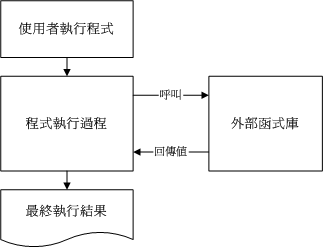

| 我们在 Linux 是什么 一文当中，提到了 GNU 与 GPL 还有开放源码等咚咚，不过，前面都还没有提到真正的开放源码是什么的讯息！在这一章当中，我们将藉由 Linux 操作系统里面的执行文件，来理解什么是可执行的程序，以及了解什么是编译器。另外，与程序息息相关的函式库(library)的信息也需要了解一番！不过，在这个章节当中，鸟哥并不是要您成为一个开放源码的程序设计师，而是希望您可以了解如何将开放源码的程序设计、加入函式库的原理、透过编译而成为可以执行的 binary file ，最后该执行档可被我们所使用的一连串过程！ 了解上面的咚咚有什么好处呢？！因为在 Linux 的世界里面，我们常常需要自行安装套件在自己的 Linux 系统上面，所以如果您有简单的程序编译概念，那么将很容易进行套件的安装，甚至在发生套件编译过程中的错误时，您也可以自行作一些简易的修订呢！而最传统的套件安装过程，自然就是由原始码编译而来的！所以，在这里我们将介绍最原始的套件管理方式：使用 Tarball 来安装与升级管理我们的套件喔！ |
如果鸟哥想要在我的 Linux 服务器上面跑网页服务器( WWW server )这项服务，那么我应该要做些什么事呢？呵呵！当然就一定需要『安装网页服务器的套件』！如果鸟哥的服务器上面没有这个套件的话，那当然也就无法启用 WWW 的服务啦！所以啦，想要在您的 Linux 上面进行一些有的没的功能，学会『如何安装套件』是很重要的一个课题！
咦！安装套件有什么难的？在 Windows 操作系统上面安装套件时，不是只要一直给他按『下一步』就可以安装妥当了吗？话是这样说没错啦，不过，也由于如此，所以在 Windows 系统上面的软件都是一模一样的，也就是说，您『无法修改该软件的原始程序代码』，因此，万一您想要增加或者减少该软件的某些功能时，呵呵！大概只能求助于当初发行该软件套件的厂商了！
或许你会说：『唉呦！我不过是一般人，不会用到多余的功能，所以不太可能会更动到程序代码的部分吧！？』如果您这么想的话，很抱歉～是有问题的！怎么说呢？像目前网络上面的病毒、黑客软件、臭虫程序等等，都可能对您的主机上面的某些软件造成影响(这是因为软件开发者在写作之初可能并没有想到某些问题所致！)，导致主机的当机或者是其它数据损毁等等的伤害。如果您可以藉由安全信息单位所提供的修订方式进行修改，那么您将可以很快速的自行修补好该软件的漏洞，而不必一定要等到套件开发商提供修补的程序包哩！要知道，提早补洞是很重要的一件事。
这样说可以了解 Linux 的优点了吗？！没错！因为 Linux 上面的套件几乎都是经过 GPL 的授权，所以每个套件几乎均提供原始程序代码，并且您可以自行修改该程序代码，以符合您个人的需求呢！很棒吧！这就是开放源码( Open source )的优点！不过，到底什么是开放源码？这些程序代码是什么咚咚？又 Linux 上面可以执行的相关套件档案与开放源码之间是如何转换的？不同版本的 Linux 之间能不能使用同一个执行档？或者是该执行档需要由原始程序代码的部分重新进行转换？这些都是需要厘清观念的。底下我们先就原始程序代码与可执行档来进行说明。
什么是开放源码、编译器与可执行档？
在讨论程序代码是什么之前，我们先来谈论一下什么是可执行档？我们说过，在 Linux 系统上面，一个档案能不能被执行看的是有没有可执行的那个权限( 具有 x permission )，不过，Linux 系统上真正认识的可执行文件其实是二进制档案( binary file )，例如 /usr/bin/passwd, /bin/touch 这些个档案即为 binary 的可执行档案！或许您会说，咦！ shell scripts 不是也可以执行吗？！其实 shell scripts 只是利用 shell ( 例如 bash )这支程序的功能进行一些判断式，而最终执行的除了 bash 提供的功能外，仍是呼叫一些已经编译好的 binary 档案来执行的呢！( bash 本身就是 binary file 喔！)那么我怎么知道一个档案是否为 binary 呢？！还记得我们在 Linux 档案与目录管理 里面提到的 file 这个指令的功能吗？！对啦！用他就是了！我们现在来测试一下：
# 先以系统的档案测试看看：
[root@test root]# file /bin/bash
/bin/bash: ELF 32-bit LSB executable, Intel 80386, version 1 (SYSV), for GNU/Linux 2.2.5, dynamically linked (uses shared libs), stripped
# 如果是我们在 shell script 那个章节写的 test01-hello.sh 档案呢？
[root@test root]# file test01-hello.sh
test01-hello.sh: Bourne-Again shell script text executable
看到了吧！如果是 binary file 而且是可以执行的时候，他就会显示执行文件类别 ( ELF 32-bit LSB executable )，同时会说明是否使用动态函式库( shared libs )，而如果是一般的 script ，那他就会显示出 text executables 之类的字样！(事实上，test01-hello.sh 的数据显示出 Bourne-Again ... 那一行，是因为您的 scripts 上面第一行有宣告 #!/bin/bash 的缘故，如果您将 script 的第一行拿掉，呵呵！那么不管 test01-hello.sh 的权限为何，他其实显示的是 ASCII 文字文件的信息喔！)
既然 Linux 操作系统真正认识的其实是 binary file ，那么我们是如何做出这样的一支 binary 的程序呢？！首先，我们必须要写程序，用什么东西写程序？就是一般的文书处理器啊！我都喜欢使用 vi 来进行程序的撰写，写完的程序就是所谓的原始程序代码！这个程序代码档案其实就是一般的纯文字文件( text file )。在完成这个原始码档案的编写之后，再来就是要将这个档案『编译』成为操作系统看的懂得 binary file ！而要编译自然就需要『编译器』来动作，经过编译器的编译之后，就会产生一支可以执行的 binary file 。
举个例子来说，在 Linux 上面最标准的程序语言为 C ，所以我使用 C 的语法进行原始程序代码的书写，写完之后，以 Linux 上标准的 C 语言编译器 gcc 这支程序来编译，就可以制作一支可以执行的 binary file 。整个的流程有点像这样：

图一、简易的 gcc 编译流程
事实上，在编译的过程当中，还会产生所谓的目标文件( Object file )，这些档案是以 *.o 的附文件名样式存在的！至于 C 语言的原始码档案通常以 *.c 作为附档名。此外，有的时候，我们会在程序当中『引用、呼叫』其它的外部子程序，或者是利用其它套件提供的『函数功能』，这个时候，我们就必须要在编译的过程当中，将该函式库给他加进去，如此一来，编译器就可以将所有的程序代码与函式库作一个连结( Link )以产生正确的执行档。
在前一小节的图一示意图中，在编译的过程里面有提到函式库。好啦，那么什么是函式库呢？先举个例子来说，我们的 Linux 系统上，系统通常已经提供一个可以进行身份验证的模块，称为 PAM ，这个 PAM 提供的功能可以让很多的程序在被执行的时候，除了可以验证使用者登入的信息外，还可以将身份确认的数据记录在登录文件( log file, 请查阅后续的 认识登录档 一文 )里面，以方便系统管理员的追踪！既然有这么好用的功能，那如果我要编写具有身份认证功能的程序时，直接引用该 PAM 的功能就好啦，如此一来，我就不需要重新设计认证机制！也就是说，只要在我写的程序代码里面，设定去呼叫 PAM 的函式功能，呵呵！我的程序就可以利用 Linux 原本就有的身份认证的程序咯！除此之外，其实我们的 Linux 核心( kernel )也提供了相当多的函式库来给硬件开发者利用喔。
函式库又分为动态与静态函式库，这两个咚咚的分别我们在后面的章节再加以说明。这里我们以一个简单的流程图，来示意一支有呼叫外部函式库的程序的执行情况。

图二、程序引用函式库的示意图
很简单的示意图啊！^_^！而如果要在程序里面加入引用的函式库，就需要如图一所示，亦即在编译的过程当中，就需要加入函式库的相关设定。
事实上， Linux 的核心提供很多的核心相关函式库与外部参数，这些核心功能在设计硬件的驱动程序的时候是相当有用的信息，这些核心相关信息大多放置在 /usr/include, /lib, /usr/lib 里面哩！我们在本章的后续小节再来探讨。
事实上，使用类似 gcc 的编译器来进行编译的过程并不简单，因为除了每个主程序与子程序均需要写上一笔编译过程的指令外，还需要写上最终的连结程序。程序代码小的时候还好，如果是类似 WWW 服务器软件( 例如 Apache )，或者是类似核心的原始码，动则数百 MBytes 的资料量，呵呵！指令会写到疯掉～这个时候，我们就可以使用 make 这个指令的相关功能来进行编译过程的指令简化了！
当执行 make 时，make 会在当时的目录下搜寻 Makefile ( or makefile ) 这个文字文件，而 Makefile 里面则记录了原始码如何编译的详细信息！ make 会自动的判别原始码是否经过变动了，而自动更新执行档，是软件工程师相当好用的一个辅助工具呢！
咦！make 是一支程序，会去找 Makefile ，那 Makefile 怎么写？呵呵！通常软件开发商都会写一支侦测程序来侦测使用者的作业环境，以及该作业环境是否有软件开发商所需要的其它功能，该侦测程序侦测完毕后，就会主动的建立这个 Makefile 的规则档案啦！通常这支侦测程序的文件名为 configure 或者是 config 。
咦！？那为什么要侦测作业环境呢？！在 什么是 Linux 那个章节当中，不是有提到 Linux 不过就是一个核心吗？！是这样没错啦！但是您必须要了解的是，某些软件套件需要一些相关的套件辅助，并且，某些驱动程序则是适用在不同的核心系统( 因为核心提供的函式库可能并不相同，例如 kernel 2.2.xx 与 kernel 2.4.xx 就不太一样！ )，并且每个 Linux distribution 所提供的函式库名称与路径可能也不太一样，所以说，在 Mandrake 上面可以执行的一个 binary file ，直接复制到 Red Hat 平台上，可不见得可以顺利执行( 事实上，是不太可能可以执行啦！ ^_^ )。所以啦，原始码写出来之后，需要针对不同的作业环境来进行编译的行为龋≌飧鍪焙蚓秃苄枰 configure 以及 make 的功能啊！
详细的 make 用法与 Makefile 规则，在后续的小节里面再探讨！
从前面几个小节的说明来看，我们知道所谓的原始程序代码，其实就是一些写满了程序代码的纯文本文件。那我们从前面的 档案的压缩与打包 章节当中，也了解了纯文字文件其实是很浪费硬盘空间的一种档案格式！( 想一想，一个核心的原始码档案大约要 200~300 MB 以上，如果每个人都去下载这样的一个核心档案，呵呵！那么网络频宽不被吃的死翘翘才怪呢！ )所以啦，如果能够将这些原始码透过档案的打包与压缩技术来将档案的数量与容量减小，不但让使用者容易下载，套件开发商的网站频宽也能够节省很多很多啊！这就是 Tarball 档案的由来！
所谓的 Tarball 档案，其实就是将套件的所有原始码档案先以 tar 打包，然后再以压缩技术来压缩，通常最常见的就是以 gzip 来压缩了。因为利用了 tar 与 gzip 的功能，所以 tarball 档案一般的附档名就会写成 *.tar.gz 或者是简写为 *.tgz ！也就是说， Tarball 套件解压缩之后，里面的档案通常就会有：其中最重要的是那个 INSTALL 或者是 README 这两个档案，通常您只要能够参考这两个档案，呵呵！ Tarball 套件的安装是很简单的啦！我们在后面的章节会再继续介绍 Tarball 这个玩意儿。
- 原始程序代码档案；
- 侦测程序档案( 可能是 configure 或 config 等档名 )；
- 本套件的简易说明与安装说明( INSTALL 或 README )。
将原始码作了一个简单的介绍，也知道了系统其实认识的可执行档是 binary file 之后，好了，得要聊一聊，那么怎么安装与升级一个 Tarball 的套件？为什么要安装一个新的套件呢？当然是因为我们的主机上面没有该套件！那么，为何要升级呢？！原因可能有底下这些：在上面的需求当中，尤其需要注意的是第二点，当一个套件有安全上的顾虑时，千万不要怀疑，赶紧更新套件吧！否则造成网络危机，那可不是闹着玩的！那么更新的方法有哪些呢？基本上更新的方法可以分为两大类，分别是：
- 需要新的功能，但旧有主机的旧版套件并没有，所以需要升级到新版的套件；
- 旧版本的套件上面可能有安全上的顾虑，所以需要更新到新版的套件；
- 旧版的套件执行效能不彰，或者执行的能力不能让管理者满足。
上面第一点很简单，就是直接以 Tarball 在自己的机器上面进行侦测、编译、安装与设定等等动作来升级就是了。不过，这样的动作虽然让使用者在安装过程当中具有很高的弹性，但毕竟是比较麻烦一点，如果 Linux distribution 厂商能够针对自己的作业平台先进行编译等过程，再将编译好的 binary file 释出的话，那由于我的系统与该 Linux distribution 的环境是相同的，所以他所释出的 binary file 就可以在我的机器上面直接安装啦！省略了侦测与编译等等繁杂的过程呢！目前很多 binary file 升级的机制呢，包括有 Red Hat 发展的 RPM 与 up2date, yum 等在线更新模式；Mandrake 的 urpmi 套件更新方式； Debian 使用的 dpkg ； Sun Unix 使用的 pkg ，以及目前很流行的 apt 在线更新模式等等，以使用率来说，目前最传统的是以 Tarball 直接进行编译的安装与升级，而另一个则是以 RPM 相关的机制来进行安装与升级！本章节主要针对 Tarball ，至于 RPM 则留待下个章节再来介绍呢！
- 直接以原始码透过编译来安装与升级；
- 直接以编译好的 binary file 来安装与升级。
好了，那么一个套件的 Tarball 是如何安装的呢？基本流程是这样的啦：上面第 3, 4 步骤当中，我们可以透过 make 这个指令的功能来简化他，所以整个步骤其实是很简单的啦！只不过您就得需要至少有 gcc 以及 make 这两个套件在您的 Linux 系统里面才行喔！详细的过程以及需要的套件我们在后面的章节继续来介绍的啦！
- 将 Tarball 由厂商的网页下载下来；
- 将 Tarball 解开，产生很多的原始码档案；
- 开始以 gcc 进行原始码的编译( 会产生目标文件 object files )；
- 然后以 gcc 进行函式库、主、子程序的连结，以形成主要的 binary file；
- 将上述的 binary file 以及相关的设定文件安装至自己的主机上面。
我们以 Linux 上面最常见的 C 语言来撰写第一支程序！第一支程序最常作的就是.....在屏幕上面印出『Hello World！』的字样～当然，这里我们是以简单的 C 语言来撰写，如果您对于 C 有兴趣的话，那么请自行购买相关的书籍喔！ ^_^好了，不唆，立刻编辑第一支程序吧！( 注：请先确认您的 Linux 系统里面已经安装了 gcc 了喔！如果尚未安装 gcc 的话，请先参考下一节的 RPM 安装法，先安装好 gcc 之后，再回来阅读本章 )
# 1. 先编辑原始码：
[guest@test guest]# vi hello.c<==注意一下， C 语言用 .c 的附n名
#include <stdio.h>
int main(void)
{
printf("Hello World\n");
}
# 上面是 C 语言的语法，那个第一行的 # 并不是批注喔！如果您担心
# 输入错误，请到底下的连结下载这个档案：
# http://linux.vbird.org/download/books/basic/source_code/hello.c
# 2. 开始将原始码编译成为可执行的 binary file ：
[guest@test guest]# gcc hello.c
# 这个时候，在本目录下会产生一个名为 a.out 的执行档！
# 在预设的状态下，如果我们直接以 gcc 编译原始码，并且没有加上
# 任何参数，则执行档的档名会被自动设定为 a.out 这个文件名称！
# 3. 执行一下这个档案：
[guest@test guest]# ./a.out
Hello World <==呵呵！成果出现了！
好了，上面的例子很简单吧！那个 hello.c 就是原始码，而 gcc 就是编译器，至于 a.out 就是编译成功的可执行 binary file ！咦！如果我想要产生目标文件( object file )来进行其它的动作( 在较大的套件当中，就需要使用多个目标文件来进行相关的连结 )，而且执行档的档名也不要用预设的 a.out ，那该如何是好？可以将上面的第 2 个步骤改成这样：
[guest@test guest]# gcc -c hello.c
# 会产生一个名为 hello.o 的目标文件，object file 的附档名为 *.o 喔！
[guest@test guest]# gcc -o hello hello.o
# 这个步骤是利用 hello.o 这个目标文件制作出一个名为 hello 的执行档
# 详细的 gcc 语法我们会在后续章节中继续介绍！
# 透过这个动作后，我们可以得到 hello 及 hello.o 两个档案，
# 真正可以执行的是 hello 这个 binary file 喔！
# 3. 执行一下这个档案：
[guest@test guest]# ./hello
Hello World
或许您会觉得，咦！只要一个动作作出 a.out 就好了，干嘛还要先制作目标文件再做成执行档呢？！呵呵！透过下个范例，您就可以知道为什么啦！
如果我们在一个主程序里面又呼叫了另一个子程序呢！？这是很常见的一个程序写法，因为可以简化整个程序的易读性！在底下的例子当中，我们以 thanks.c 这个主程序去呼叫 thanks_2.c 这个子程序，写法很简单：
# 1. 先编辑原始码 thanks.c 与 thanks_2.c：
[guest@test guest]# vi thanks.c
#include <stdio.h>
int main(void)
{
printf("Hello World\n");
thanks_2();
}
# 上面的 thanks_2(); 那一行就是呼叫子程序啦！[guest@test guest]# vi thanks_2.c
void thanks_2(void)
{
printf("Thank you!\n");
}
# 上面这两个档案您可以到底下下载
# http://linux.vbird.org/download/books/basic/source_code/thanks.c
# http://linux.vbird.org/download/books/basic/source_code/thanks_2.c
# 2. 开始将原始码编译成为可执行的 binary file ：
[guest@test guest]# gcc -c thanks.c thanks_2.c
# 产生了两个目标文件！
[guest@test guest]# gcc -o thanks thanks.o thanks_2.o
# 3. 执行一下这个档案：
[guest@test guest]# ./thanks
Hello World
Thank you!
知道为什么要制作出目标文件了吗？！由于我们的原始码档案有时并非仅只有一个档案，所以我们无法直接进行编译。这个时候就需要先产生目标文件，然后再以连结制作成为 binary 可执行档。另外，如果有一天，您更新了 thanks_2.c 这个档案的内容，则您只要重新编译 thanks_2.c 来产生新的 thanks_2.o ，然后再以连结制作出新的 binary 可执行档即可！而不必重新编译其它没有更动过的原始码档案。这对于软件开发者来说，是一个很重要的功能，因为有时候要将诺大的原始码全部编译完成，会花很长的一段时间呢！
此外，如果您想要让程序在执行的时候具有比较好的效能，或者是其它的除错功能时，可以在编译的过程里面加入适当的参数，例如底下的例子：
[guest@test guest]# gcc -O -c thanks.c thanks_2.c
# -O 为产生最佳化的参数
[guest@test guest]# gcc -Wall -c thanks.c thanks_2.c
thanks.c: In function `main':
thanks.c:5: warning: implicit declaration of function `thanks_2'
thanks.c:6: warning: control reaches end of non-void function
thanks_2.c: In function `thanks_2':
thanks_2.c:3: warning: implicit declaration of function `printf'
# -Wall 为产生更详细的编译过程信息。上面的讯息为警告讯息( warning )
# 所以不用理会也没有关系！
刚刚我们都仅只是在屏幕上面印出一些字眼而已，如果说要计算数学公式呢？！例如我们想要计算出三角函数里面的 sin(90度角)，要注意的是，大多数的程序语言都是使用径度而不是一般我们在计算的『角度』， 180 度角约等于 3.14 径度！嗯！那我们就来写一下这个程序吧！
[guest@test guest]# vi sin.c
#include <stdio.h>
int main(void)
{
float value;
value = sin ( 3.14 / 2 );
printf("%f\n",value);
}
# 上面这个档案的内容可以在底下取得！
# http://linux.vbird.org/download/books/basic/source_code/sin.c
那要如何编译这支程序呢？我们先直接编译看看：
[guest@test guest]# gcc sin.c
/tmp/ccppUCx8.o(.text+0x1e): In function `main':
: undefined reference to `sin'
collect2: ld returned 1 exit status
特别注意上面的说明，唉啊！怎么没有编译成功？它说的是『undefined reference to sin』，说的是『没有 sin 的相关定义参考值！』，为什么会这样呢？这是因为 C 语言里面的 sin 函示是写在 libm.so 这个函式库中，而我们并没有在原始码里面加入相关的说明，所以当然就需要在编译与连结的时候将这个函式库给他连结进执行档里面啊！所以我们可以这样做：
[guest@test guest]# gcc sin.c -lm -L/lib -L/usr/lib
# 特别注意，那个 -lm 可以拆开成两部份来看，
# -l 是『加入某个函式库(library)』的意思，而
# m 则是 libm.so 这个函式库，其中， lib 与附档名(.a 或 .so)不需要写
# 所以 -lm 表示使用 libm.so (或 libm.a) 这个函式库的意思～
# 至于那个 -L 后面接的路径呢？这表示：
#『我要的函式库 libm.so 请到 /lib 或 /usr/lib 里面搜寻！』
[guest@test guest]# ./a.out
1.000000
上面的说明很清楚了吧！！不过，要注意的是，由于 Linux 预设是将函式库放置在 /lib 与 /usr/lib 当中，所以您没有写 -L/lib 与 -L/usr/lib 也没有关系的！不过，万一哪天您使用的函式库并非放置在这两个目录下，那么 -L/path 就很重要了！否则会找不到函式库喔！
除了连结的函式库之外，您或许已经发现一个奇怪的地方，那就是在我们的 sin.c 当中第一行『 #include <stdio.h>』，这行说的是要将一些定义数据由 stdio.h 这个档案读入，这包括 printf 的相关设定。这个档案其实是放置在 /usr/include/stdio.h 的！那么万一这个档案并非放置在这里呢？那么我们就可以使用底下的方式来定义出要读取的 include 档案放置的目录：
[guest@test guest]# gcc sin.c -lm -I/usr/include
-I/path 后面接的路径( Path )就是设定要去搜寻相关的 include 档案的目录啦！不过，同样的，默认值是放置在 /usr/include 底下，除非您的 include 档案放置在其它路径，否则也可以略过这个项目！
透过上面的几个小范例，您应该对于 gcc 以及原始码有一定程度的认识了，再接下来，我们来稍微整理一下 gcc 的简易使用方法吧！
| # 仅将原始码编译成为目标文件，并不制作连结等功能： [guest@test guest]# gcc -c hello.c # 会自动的产生 hello.o 这个档案，但是并不会产生 binary 执行档。 # 在编译的时候，依据作业环境给予最佳化执行速度 [guest@test guest]# gcc -O hello.c -c # 会自动的产生 hello.o 这个档案，并且进行最佳化喔！ # 在进行 binary file 制作时，将连结的函式库与相关的路径填入 [guest@test guest]# gcc sin.c -lm -L/usr/lib -I/usr/include # 这个指令较常下达在最终连结成 binary file 的时候， # -lm 指的是 libm.so 或 libm.a 这个函式库档案； # -L 后面接的路径是刚刚上面那个函式库的搜寻目录； # -I 后面接的是原始码内的 include 档案之所在目录。 # 将编译的结果输出成某个特定档名 [guest@test guest]# gcc -o hello hello.c # -o 后片接的是要输出的 binary file n名 # 在编译的时候，输出较多的讯息说明 [guest@test guest]# gcc -o hello hello.c -Wall # 加入 -Wall 之后，程序的编译会变的较为严谨一点， # 所以警告讯息也会显示出来！ |
在前言的部分我们提到过 make 的功能是可以简化编译过程里面所下达的指令，同时还具有很多很方便的功能！那么底下咱们就来试看看使用 make 简化下达编译指令的流程吧！
先来想象一个案例，假设我的执行档里面包含了四个原始码档案，分别是 main.c haha.c sin_value.c cos_value.c 这四个档案，这四个档案您可以到 http://linux.vbird.org/download/books/basic/source_code/main.tgz 来下载，由于这四个档案里面包含了相关性，并且还用到数学函式在里面，所以如果您想要让这个程序可以跑，那么就需要这样编译：
[guest@test guest]# gcc -c main.c
[guest@test guest]# gcc -c haha.c
[guest@test guest]# gcc -c sin_value.c
[guest@test guest]# gcc -c cos_value.c
# 先以上面的动作制作出四个目标文件，然后再进行下面的动作：
[guest@test guest]# gcc -o main main.o haha.o sin_value.o \
> cos_value.o -lm -L/usr/lib -L/lib
# 这样就可以制作出 main 这个执行档！执行看看吧！
[guest@test guest]# ./main
HaHa! I'm the King of the world
0.706825
0.707388
呵呵！要做好多动作啊！真是麻烦，如果可以的话，能不能一个步骤就给他完成上面所有的动作呢？试看看在这个目录下建立一个 makefile 档案，内容如下：
# 1. 先建立编译的规则
[guest@test guest]# vi makefile
main: main.o haha.o sin_value.o cos_value.o
gcc -o main main.o haha.o sin_value.o cos_value.o -lm
# 注意： gcc 之前是 <tab> 按键产生的空格喔！
# 2. 尝试给他建立规则看看
[guest@test guest]# rm -f main *.o <==先将之前的目标文件去除
[guest@test guest]# make
cc -c -o main.o main.c
cc -c -o haha.o haha.c
cc -c -o sin_value.o sin_value.c
cc -c -o cos_value.o cos_value.c
gcc -o main main.o haha.o sin_value.o cos_value.o -lm
# 这个时候 make 会主动去读取 makefile 这个档案的内容，
# 并根据内容直接去给他编译起相关的执行档！
# 3. 如果再执行一次 make 会怎样？！
[guest@test guest]# make
make: `main' is up to date.
# 看到了吧？！是否很方便呢？！
或许您会说：『如果我建立一个 shell script 来将上面的所有动作都集结在一起，不是具有同样的效果吗？』呵呵！效果当然不一样，以上面的测试为例，我们仅写出 main 需要的目标文件，结果 make 会主动的去判断每个目标文件相关的原始码档案，并直接予以编译，最后再直接进行连结的动作！哈哈！真的是很方便啊！此外，如果我们更动过某些原始码档案，则 make 也可以主动的判断哪一个原始码与相关的目标文件档案有更新过，并仅更新该档案，如此一来，将可大大的节省很多编译的时间呢！要知道，某些程序在进行编译的行为时，会消耗很多的 CPU 资源呢！所以说， make 有这些好处：既然 make 有这么多的优点，那么我们当然就得好好的了解一下 make 这个令人关心的家伙啦！而 make 里面最需要注意的大概就是那个规则档案，也就是 makefile 这个档案的语法啦！底下我们针对 makefile 的语法来加以介绍。
- 简化编译时所需要下达的指令；
- 若在编译完成之后，修改了某个原始码档案，则 make 仅会针对被修改了的档案进行编译，其它的 object file 不会被更动；
- 最后可以依照相依性来更新( update )执行档。
make 的语法可是相当的多而复杂的，有兴趣的话可以到 http://www.gnu.org/software/make/manual/html_mono/make.html 去查阅相关的说明，鸟哥这里仅列出一些基本的规则，重点在于让读者们未来在接触原始码时，不会太紧张啊！ ^_^好了，基本的 makefile 规则是这样的：
标的(target): 目标文件1 目标文件2
<tab> gcc -o 欲建立的执行文件 目标文件1 目标文件2
那个标的(target)就是我们想要建立的信息，而目标文件就是具有相关性的 object files ，那建立执行文件的语法就是以 <tab> 按键开头的那一行！特别给他留意喔，『命令列必须要以 tab 按键作为开头』才行！他的规则基本上是这样的：同样的，我们以刚刚上一个小节的范例进一步说明，如果我想要有两个以上的执行动作时，例如下达一个指令就直接清除掉所有的目标文件与执行文件，该如何制作呢？
- 在 makefile 当中的 # 代表批注；
- <tab> 需要在命令行的第一个字符；
- 标的(target)与相依档案(就是目标文件)之间需以『:』隔开。
# 1. 先建立编译的规则
[guest@test guest]# vi makefile
main: main.o haha.o sin_value.o cos_value.o
gcc -o main main.o haha.o sin_value.o cos_value.o -lm
clean:
rm -f main main.o haha.o sin_value.o cos_value.o
# 2. 测试看看：
[guest@test guest]# make clean
rm -f main main.o haha.o sin_value.o cos_value.o
如此一来，我们的 makefile 里面就具有至少两个标的，分别是 main 与 clean ，如果我们想要建立 main 的话，输入『make main』，如果想要清除有的没的，输入『make clean』即可啊！而如果想要先清除目标文件再编译 main 这个程序的话，就可以这样输入：『make clean main』，如下所示：
[guest@test guest]# make clean main
rm -f main main.o haha.o sin_value.o cos_value.o
cc -c -o main.o main.c
cc -c -o haha.o haha.c
cc -c -o sin_value.o sin_value.c
cc -c -o cos_value.o cos_value.c
gcc -o main main.o haha.o sin_value.o cos_value.o -lm
这样就很清楚了吧！？但是，您是否会觉得，咦！ makefile 里面怎么重复的数据这么多啊！呵呵！没错！所以我们可以再藉由 shell script 那时学到的『变数』来更简化 makefile 喔：
[guest@test guest]# vi makefile
LIBS = -lm
OBJS = main.o haha.o sin_value.o cos_value.o
main: ${OBJS}
gcc -o main ${OBJS} ${LIBS}
clean:
rm -f main ${OBJS}
与 bash shell script 的语法有点不太相同，变量的基本语法为：由于 gcc 在进行编译的行为时，会主动的去读取 CFLAGS 这个环境变量，所以，您可以直接在 shell 定义出这个环境变量，也可以在 makefile 档案里面去定义，更可以在指令列当中给予这个咚咚呢！例如：
- 变量与变量内容以『=』隔开，同时两边可以具有空格；
- 变量左边不可以有 <tab> ，例如上面范例的第一行 LIBS 左边不可以是 <tab>；
- 变量与变量内容在『=』两边不能具有『:』；
- 在习惯上，变数最好是以『大写字母』为主；
- 运用变量时，以 ${变量} 或 $(变量) 使用；
- 在该 shell 的环境变量是可以被套用的，例如提到的 CFLAGS 这个变数！
- 在指令列模式也可以给予变量。
[guest@test guest]# make clean main "CFLAGS=-Wall"
# 这个动作在上 make 进行编译时，会去取用 CFLAGS 的变量内容！
也可以这样：
[guest@test guest]# vi makefile
LIBS = -lm
OBJS = main.o haha.o sin_value.o cos_value.o
CFLAGS = -Wall
main: ${OBJS}
gcc -o main ${OBJS} ${LIBS}
clean:
rm -f main ${OBJS}
咦！我可以利用指令列进行环境变量的输入，也可以在档案内直接指定环境变量，那万一这个 CFLAGS 的内容在指令列与 makefile 里面并不相同时，以那个方式输入的为主？呵呵！环境变量取用的规则是这样的：此外，还有一些特殊的变量需要了解的喔：
- make 指令列后面加上的环境变量为优先；
- makefile 里面指定的环境变量第二；
- shell 原本具有的环境变量第三。
所以我也可以将 makefile 改成：
- $@：代表目前的标的(target)
[guest@test guest]# vi makefile
LIBS = -lm
OBJS = main.o haha.o sin_value.o cos_value.o
CFLAGS = -Wall
main: ${OBJS}
gcc -o $@ ${OBJS} ${LIBS} <==那个 $@ 就是 main ！
clean:
rm -f main ${OBJS}
这样是否稍微了解了 makefile ( 也可能是 Makefile ) 的基本语法？这对于您未来自行修改原始码的编译规则时，是很有帮助的喔！ ^_^！
从原始码的说明我们晓得要制作一个 binary 执行档需要很多咚咚的呢！这包括底下这些基础的套件：虽然 Tarball 的安装上面相当的简单，如同我们前面几个小节的例子，只要顺着开发商提供的 README 与 INSTALL 档案所载明的步骤来进行，安装是很容易的。但是我们却还是常常会在 BBS 或者是新闻群组当中发现这些留言：『我在执行某个程序的侦测档案时，他都会告诉我没有 gcc 这个套件，这是怎么回事？』还有：『我没有办法使用 make 耶！这是什么问题？』呵呵！这就是没有安装上面提到的那些基础套件啦！
- gcc 或 cc 等 C 语言编译器( compiler )：
这是一定要的啦！要将原始码编译成为可执行的 binary 才行，所以当然就需要编译器！在 Linux 上面用的当然就是 GNU 发展的 gcc 这个超好用的免费的 C 编译器啦！并且，很多在 Linux 平台上面发展的套件的原始码，原本就是以 gcc 为底来设计的呢。
- make 及 autoconfig 等套件：
一般来说，以 Tarball 方式释出的套件当中，为了简化编译的行程，通常都是配合前几个小节提到的 make 这个指令来依据目标档案的相依性而进行编译。但是我们也知道说 make 需要 makefile 这个档案的规则，那由于不同的系统里面可能具有的基础套件环境并不相同，所以就需要侦测使用者的作业环境，好自行建立一个 makefile 档案。这个自行侦测的小程序也必须要藉由 autoconfig 这个相关的套件来辅助才行。
- 需要 Kernel 提供的 Library 以及相关的 Include 档案：
从前面的原始码编译过程，我们晓得函式库( library )的重要性，同时也晓得有 include 档案的存在。很多的套件在发展的时候都是直接取用系统核心提供的函式库与 include 档案的，这样才可以与这个操作系统兼容啊！尤其是在『驱动程序方面的套件』，例如网络卡、声卡、USB 等驱动程序在安装的时候，常常是需要核心提供的相关信息的。在 Red Hat 的系统当中，这个核心相关的功能通常都是被包含在 kernel-source 或 kernel-header 这些套件名称当中，所以记得要安装这些套件喔！
咦！为什么使用者不安装这些套件啊？呵呵！这是因为目前的 Linux distribution 大多已经偏向于桌上型计算机的使用，他们希望使用者能够按照厂商自己的希望来安装相关的套件即可，所以通常『预设』是没有安装 gcc 或者是 make 等套件的。所以啦，如果您希望未来可以自行安装一些以 Tarball 方式释出的套件时，记得请自行挑选想要安装的套件名称喔！例如在 Mandrake 或者是 Red Hat 当中记得选择 Software Development 以及 Kernel Source Development 等相关字眼的群集呢。
那万一我已经安装好一部 Linux 主机，但是使用的是默认值所安装的套件，所以没有 make, gcc 等咚咚，该如何是好？呵呵！问题其实不大啦，目前使用最广泛的 Mandrake 或者是 Red Hat 大多是以 RPM( 下一章会介绍 )来安装套件的，所以，您只要拿出当初安装 Linux 时的原版光盘，然后以下一章介绍的 RPM 来一个一个的加入到您的 Linux 主机里面就好啦！很简单的啦！
我们提过以 Tarball 方式释出的套件是需要重新编译可执行的 binary file 的。而 Tarball 是以 tar 这个指令来打包与压缩的档案，所以啦，当然就需要先将 Tarball 解压缩，然后到原始码所在的目录下进行 makefile 的建立，再以 make 来进行编译与安装的动作啊！所以整个安装的基础动作大多是这样的：注意到上面的第二个步骤，通常在每个软件在释出的时候，都会附上 INSTALL 或者是 README 这种档名的说明档，这些说明档请『确实详细的』阅读过一遍，通常这些档案会记录这个软件的安装要求、软件的工作项目、与软件的安装参数设定及技巧等，只要仔琐\读完这些档案，基本上，要安装好 tarball 的档案，都不会有什么大问题。至于 makefile 在制作出来之后，里头会有相当多的标的( target )，最常见的就是 install 与 clean ！通常『make clean』代表着将目标文件( object file )清除掉，『make』则是将原始码进行编译而已。注意喔！编译完成的可执行档与相关的设定档还在原始码所在的目录当中喔！因此，最后要进行『make install』来将编译完成的所有咚咚都给他安装到正确的路径去，这样就可以使用该套件啦！
- 将 tarball 档案在 /usr/local/src 目录下解压缩；
- 进入新建立的目录底下，去查阅 INSTALL 与 README 等相关档案内容( 很重要的步骤！ )；
- 根据 INSTALL/README 的内容察看并安装好一些相依的套件( 非必要 )；
- 以自动侦测程序( configure 或 config )侦测作业环境，并建立 Makefile 这个档案；
- 以 make 这个程序并使用该目录下的 Makefile 做为他的参数设定档，来进行 make ( 编译或其它 )的动作；
- 以 make 这个程序，并以 Makefile 这个参数设定档，依据 install 这个标的( target )的指定来安装到正确的路径！
OK！我们底下约略提一下大部分的 tarball 软件之安装的指令下达方式：
- ./configure ：
这个步骤就是在建立 Makefile 这的档案！通常程序开发者会写一支 scripts 来检查您的 Linux 系统、相关的套件属性等等，这个步骤相当的重要，因为未来您的安装信息都是这一步骤内完成的！另外，这个步骤的相关信息应该要参考一下该目录下的 README 或 INSTALL 相关的档案！！基本上，这个步骤完成之后会建立( 或修改 )一个 Makefile ，这就是参数档啦！
- make clean：
make 会读取 Makefile 中关于 clean 的工作。这个步骤不一定会有，但是希望执行一下！为什么呢？因为在进行编译的时候，会产生一些 *.o 的档案，例如有个 abc.c 的原始码，经过编译后会变成 abc.o 的档案！我们称这些档案为 object file ，这些档案如果之前已经编译过并留下来的话，那么这次再编译的时候，就不会编译该档案，然而由于我们可能已经修改了部分的参数，因此该档案的编译结果事实上应该会有所不同！因此，为了避免前一次留下来的数据可能影响到这次编译的结果，所以通常可以进行一下这个步骤！
- make：
make 会依据 Makefile 当中的预设工作进行编译的行为！编译的工作主要是进行 gcc 来将原始码编译成为可以被执行的 object files ，但是这些 object files 通常还需要一些函式库之类的 link 后，才能产生一个完整的执行档！使用 make 就是要将原始码编译成为可以被执行的可执行档，而这个可执行档会放置在目前所在的目录之下，尚未被安装到预定安装的目录中；
- make install：
通常这就是最后的安装步骤了，make 会依据 Makefile 这个档案里面关于 install 的项目，将上一个步骤所编译完成的数据给他安装到预定的目录中，就完成安装啦！
- 特别留意：
请注意，上面的步骤是一步一步来进行的，而其中只要一个步骤无法成功，那么后续的步骤就完全没有办法进行的！因此，要确定每一的步骤都是成功的才可以！举个例子来说，万一今天你在 ./configure 就不成功了，那么就表示 Makefile 无法被建立起来，要知道，后面的步骤都是根据 Makefile 来进行的，既然无法建立 Makefile ，后续的步骤当然无法成功！另外，如果在 make 无法成功的话，那就表示源文件无法被编译成可执行档，那么 make install 主要是将编译完成的档案给他安装下去的，既然都没有成功的执行档了，怎么进行安装？所以，要每一个步骤都正确无误才能往下继续做！此外，如果安装成功，并且是安装在独立的一个目录中，例如 /usr/local/packages 这个目录中好了，那么您就必需手动的将这个套件的 man page 给他放到 /etc/man.config 里面去。
或许您已经发现了也说不定，那就是为什么前一个小节里面， Tarball 要在 /usr/local/src 里面解压缩呢？呵呵！基本上，在预设的情况下，原本的 Linux distribution 释出安装的套件大多是在 /usr 里面的，而使用者自行安装的套件则建议放置在 /usr/local 里面。这是考虑到管理使用者所安装套件的便利性。怎么说呢？我们晓得几乎每个套件都会提供在线说明的服务，那就是 info 与 man 的功能。在预设的情况下， man 会去搜寻 /usr/local/man 里面的说明文件，因此，如果我们将套件安装在 /usr/local 底下的话，那么自然安装完成之后，该套件的说明文件就可以被找到了。此外，如果您所管理的主机其实是由多人共同管理的，或者是如同学校里面，一部主机是由学生管理的，但是学生总会毕业吧？所以需要进行交接，如果大家都将套件安装在 /usr/local 底下，那么管理上不就显的特别的容易吗？！所以，通常我们会建议大家将自己安装的套件放置在 /usr/local 下，至于原始码( Tarball )则建议放置在 /usr/local/src( src 为 source 的缩写 )底下啊。
再来，让我们先来看一看 Linux distribution 预设的安装套件的路径会用到哪些？我们以 apache 这个软件来说明的话( apache 是 WWW 服务器软件，详细的数据请参考服务器架设篇。您的系统不见得有装这个套件 )：我们会发现套件的内容大致上是摆在 etc, lib, man, bin 等目录当中，分别代表『设定档、函式库、执行档、在线说明档』。好了，那么你是以 tarball 来安装时呢？如果是放在预设的 /usr/local 里面，由于 /usr/local 原本就预设这几个目录了，所以你的数据就会被放在：
- /etc/httpd
- /usr/lib
- /usr/bin
- /usr/share/man
- /usr/local/etc
- /usr/local/bin
- /usr/local/lib
- /usr/local/man
- /usr/local/apache/etc
- /usr/local/apache/bin
- /usr/local/apache/lib
- /usr/local/apache/man
读万卷书不如行万里路啊！所以当然我们就来给他测试看看，看您是否真的了解了如何利用 Tarball 来安装软件呢？！我们利用时间服务器 ntp-4.1.2 这个套件来测试安装看看。先请到 http://www.ntp.org/downloads.html 这个目录去下载档案，(您也可以下载比较新的档案来测试的啦！)或者直接到鸟哥的网站下载：http://linux.vbird.org/download/books/basic/source_code/ntp-4.1.2.tar.gz。假设我对这个套件的要求是这样的：那么您可以依照底下的步骤来安装测试看看( 如果可以的话，请您不要参考底下的文件数据，先自行安装过一遍这个软件，然后再来对照一下鸟哥的步骤喔！ )。
- 假设 ntp-4.1.2.tar.gz 这个档案放置在 /root 这个目录下；
- 原始码请解开在 /usr/local/src 底下；
- 我要安装到 /usr/local/ntp 这个目录中；
# 1. 解压缩，并阅读一下 ntp 底下的 README 与 INSTALL：
[root@test root]# cd /usr/local/src
[root@test src]# tar -zxvf /root/ntp-4.1.2.tar.gz
# 这个步骤会让原始码解开成为 /usr/local/src/ntp-4.1.2 这个目录
# 2. 进入原始码所在目录，并且查阅如何安装的技巧：
[root@test src]# cd ntp-4.1.2
[root@test ntp-4.1.2]# vi INSTALL ( 或 vi README)
# 3. 开始设定参数、编译与安装：
[root@test ntp-4.1.2]# ./configure --help | more
# 上面这个动作可以察看一下可用的参数！
[root@test ntp-4.1.2]# ./configure --prefix=/usr/local/ntp \
> --enable-all-clocks --enable-parse-clocks
checking for gcc... (cached) gcc
checking whether we are using the GNU C compiler... (cached) yes
checking whether gcc accepts -g... (cached) yes
.....(略)....
configure: creating ./config.status
config.status: creating Makefile
# 一般来说 configure 设定参数较重要的就是那个 --prefix=/path 了，
# --prefix 后面接的路径就是『这个软件未来要安装到那个目录去？』
# 如果您没有指定 --prefix=/path 这个参数，通常预设参数就是 /usr/local
# 至于其它的参数意义就得要参考 ./configure --help 了！
# 这个动作完成之后会产生 makefile 或 Makefile 这个档案
# 当然啦，这个侦测检查的过程会显示在屏幕上，特别留意关于 gcc 的检查，
# 还有最重要的是最后需要成功的建立起 Makefile 才行！(上面最后一行)
[root@test ntp-4.1.2]# make clean ; make
[root@test ntp-4.1.2]# make check
[root@test ntp-4.1.2]# make install
# 将数据给他安装在 /usr/local/ntp 底下
整个动作就这么简单，您完成了吗？！完成之后到 /usr/local/ntp 您发现了什么？！
| [guest@test guest]# vi expatch.old echo "check your postfix's body and header drop settings" echo "postmap -q - regexp:header_checks < header_checks" postmap -q - regexp:header_checks < header_checks echo "postmap -q - regexp:body_checks < body_checks" postmap -q - regexp:body_checks < body_checks [guest@test guest]# vi expatch.new |
| [guest@test guest]# diff expatch.old expatch.new 2c2 < echo "postmap -q - regexp:header_checks < header_checks" --- > echo "postmap -q - regexp:header_checks < header_checks This's right" 4c4 < echo "postmap -q - regexp:body_checks < body_checks" --- > echo "postmap -q - regexp:body_checks < body_checks This's right" |
| [guest@test guest]# vi expatch.patch *** expatch.old 2004-04-09 14:22:49.000000000 +0800 --- expatch.new 2004-04-09 14:23:18.000000000 +0800 2c2 < echo "postmap -q - regexp:header_checks < header_checks" --- > echo "postmap -q - regexp:header_checks < header_checks This's right" 4c4 < echo "postmap -q - regexp:body_checks < body_checks" --- > echo "postmap -q - regexp:body_checks < body_checks This's right" |
| [guest@test guest]# patch -p0 < expatch.patch # 注意喔，这个时候我的工作目录底下会存在 expatch.old 才对！ # 然后立刻察看一下，您会发觉， expatch.new 与 expatch.old 变成一模一样的了！ |
首先我们要知道的是，函式库的类型有哪些？依据函式库被使用的类型而分为两大类，分别是静态( Static )与动态( Dynamic )函式库两类。底下我们来谈一谈这两种类行的函式库吧！
- 静态函式库：
- 附n名：这类的函式库通常附档名为 libxxx.a 的类型；
- 编译行为：这一类型的函式库在被使用到程序当中的时候，都是整个函式库的所有数据被整合到执行文件当中，也就是说，当我们在进行编译的动作时，这个函式库会被加入到执行档内，所以利用静态函式库编译成的档案会比较大一些喔；
- 独立执行的状态：这类函式库最大的优点，就是编译成功的可执行档可以独立执行，而不需要再向外部要求读取函式库的内容( 请参照动态函式库的说明 )。
- 升级难易度：虽然执行档可以独立执行，然而当函式库升级的时候，由于我们的执行档取用的是之前版本的函式库，所以当函式库升级后，连执行档也需要重新编译过一次，才能将新的函式库整合到执行档当中。
- 动态函式库：
- 附n名：这类函式库通常附档名为 libxxx.so 的类型；
- 编译行为：动态函式库与静态函式库的编译行为差异挺大的，静态函式库是整个被编译到执行文件当中，但是动态函式库在编译的时候，在程序里面只有一个『指向( Pointer )』的位置而已。也就是说，动态函式库的内容并没有被整合到执行档当中，而是当执行档要使用到函式库的机制时，程序才会去读取函式库来使用。由于执行文件当中仅具有指向动态函式库所在的指标而已，并不包含函式库的内容，所以他的档案会比较小一点。
- 独立执行的状态：这类型的函式库不能被独立执行，因为当我们使用到函式库的机制时，程序会去读取函式库，所以函式库『必须要存在』才行，而且，函式库的『所在目录也不能改变』，因为我们的可执行档里面仅有『指标』亦即当要取用该动态函式库时，程序会主动去某个路径下读取，呵呵！所以动态函式库可不能随意移动或删除，会影响很多相依的程序软件喔！
- 升级难易度：虽然这类型的执行档无法独立运作，然而由于是具有指向的功能，所以，当函式库升级后，执行档根本不需要进行重新编译的行为，因为执行档会直接指向新的函式库档案( 前提是函式库新旧版本的档名相同喔！ )。
| [root@test root]# ldconfig [-f conf] [-C cache] [-p] 参数说明： -f conf ：那个 conf 指的是某个文件名称，也就是说，使用 conf 作为 libarary 函式库的取得路径，而不以 /etc/ld.so.conf 为默认值 -C cache：那个 cache 指的是某个文件名称，也就是说，使用 cache 作为快取暂存 的函式库资料，而不以 /etc/ld.so.cache 为默认值 -p ：列出目前有的所有函式库资料内容（在 /etc/ld.so.cache 内的资料！） 范例： [root@test root]# vi /etc/ld.so.conf /usr/kerberos/lib /usr/X11R6/lib /usr/lib/mysql <==这一行是新加入的喔！ [root@test root]# ldconfig # 画面上不会显示任何的信息，不要太紧张！正常的！ [root@test root]# ldconfig -p 680 libs found in cache `/etc/ld.so.cache' libzvt.so.2 (libc6) => /usr/lib/libzvt.so.2 libz.so.1 (libc6) => /usr/lib/libz.so.1 libz.so (libc6) => /usr/lib/libz.so libx11globalcomm.so.1 (libc6) => /usr/lib/libx11globalcomm.so.1 ........(略)..... |
| [root@test root]# ldd [-vdr] [filename] 参数说明： -v ：列出所有内容信息； -d ：重新将数据有遗失的 link 点秀出来！ -r ：将 ELF 有关的错误内容秀出来！ 范例： [root@test root]# ldd /usr/bin/passwd libuser.so.1 => /usr/lib/libuser.so.1 (0x40021000) ....(略).... libpam.so.0 => /lib/libpam.so.0 (0x40107000) ....(略).... # 我们前言的部分不是一直提到 passwd 有使用到 pam 的模块吗？！怎么知道？ # 利用 ldd 察看一下这个档案，看到 libpam.so 了吧？这就是 pam 提供的函式库 [root@test root]# ldd /lib/libc.so.6 /lib/ld-linux.so.2 => /lib/ld-linux.so.2 (0x40000000) [root@pc510 vbird]# ldd -v /lib/libc.so.6 /lib/ld-linux.so.2 => /lib/ld-linux.so.2 (0x40000000) Version information: |
前面提到很多升级与安装需要注意的事项，因为我们需要克服很多的程序漏洞，所以需要前往 Linux distribution 或者是某些套件开发商的网站，下载最新并且较安全的档案来安装才行。好了，那么『有没有可能我们下载的档案本身就有问题？』是可能的！因为骇克无所不在，很多的套件开发商已经公布过他们的网页所放置的档案曾经被窜改过！那怎么办？连下载原版的数据都可能有问题了？难道没有办法判断档案的正确性吗？！
这个时候我们就要透过每个档案独特的指纹验证数据了！因为每个档案的内容与档案大小都不相同，所以如果一个档案被修改之后，必然会有部分的信息不一样！利用这个咚咚，我们可以使用 MD5 这个指纹验证机制来判断该档案有没有被更动过！举个例子来说，中山大学提供的 Red Hat 9 原版光盘下载点( http://ftp.nsysu.edu.tw/Linux/RedHat/linux/9/en/iso/i386/ )同时提供了 Red Hat 9 所有光盘 ISO 档案的 MD5 编码，透过这个编码的比对，我们就可以晓得下载的档案是否有问题。那么万一 Red Hat 提供的光盘映象文件(image)被下载之后，让有心人士偷偷修改过，再转到 Internet 上面流传，那么你下载的这个档案偏偏不是原厂提供的，呵呵！你能保证该档案的内容完全没有问题吗？！当然不能对不对？！是的，这个时候就有 md5sum 这个档案指纹的咚咚出现啦！说说他的用法吧！
我们以 Red Hat 在 2004 年发布的一则程序臭虫修订程序为例：
https://rhn.redhat.com/errata/RHBA-2004-083.html
这个 grep-2.5.1-7.8.i386.rpm 的档案他的 MD5 指纹编码是：『5a0c3fcfcd4c3f937644b8cd71a0cf89』，如果您下载了这个档案，并且执行底下的指令，应该得到相同的指纹码的：
[root@test root]# md5sum [-bct] filename
[root@test root]# md5sum [--status|--warn] --check filename
参数说明：
-b ：使用 binary 的读档方式，预设为 Windows/DOS 档案型态的读取方式；
-c ：检验 md5sum 档案指纹；
-t ：以文字型态来读取 md5sum 的档案指纹。
范例：
[root@test root]# md5sum grep-2.5.1-7.8.i386.rpm
5a0c3fcfcd4c3f937644b8cd71a0cf89 grep-2.5.1-7.8.i386.rpm
# 看！显示的编码是否与上面相同呢？！赶紧测试看看！
一般而言，每个系统里面的档案内容大概都不相同，例如你的系统中的 /etc/passwd 这个登入信息文件与我的一定不一样，因为我们的使用者与密码、 Shell 及家目录等大概都不相同，所以由 md5sum 这个档案指纹分析程序所自行计算出来的指纹表当然就不相同！
好了，那么如何使用这个东西呢？基本上，您必须要在您的 Linux 系统上为您的这些重要的档案进行指纹数据库的建立( 好像在做户口调查！ )，将底下这些档案建立数据库：
- /etc/passwd
- /etc/shadow( 假如你不让使用者改密码了 )
- /etc/group
- /usr/bin/passwd
- /sbin/portmap
- /bin/login ( 这个也很容易被骇！ )
- /bin/ls
- /bin/ps
- /usr/bin/top
等等，这几个档案最容易被修改了！因为很多木马程序执行的时候，还是会有所谓的『执行序, PID』为了怕被 root 追查出来，所以他们都会修改这些检查排程的档案，如果你可以替这些档案建立指纹数据库( 就是使用 md5sum 检查一次，将该档案指纹记录下来，然后常常以 shell script 的方式由程序自行来检查指纹表是否不同了！ )，那么对于档案系统会比较安全啦！！
如果您对于程序的开发相当的有兴趣，那么真的建议挑这个跨平台的 C 语言来学习！